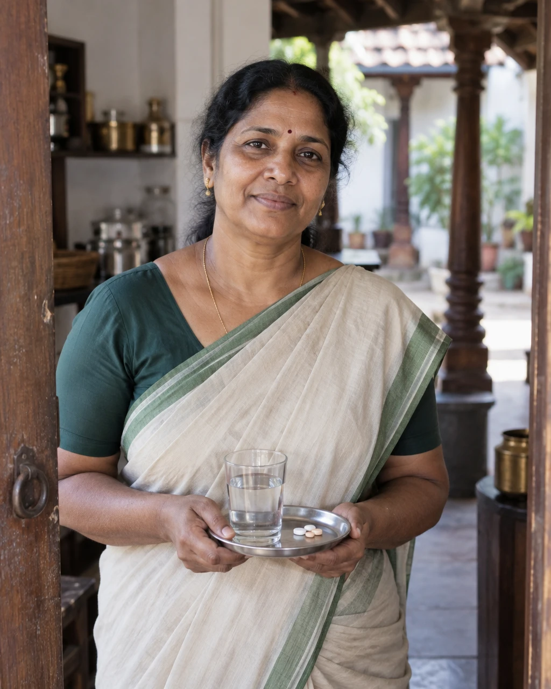
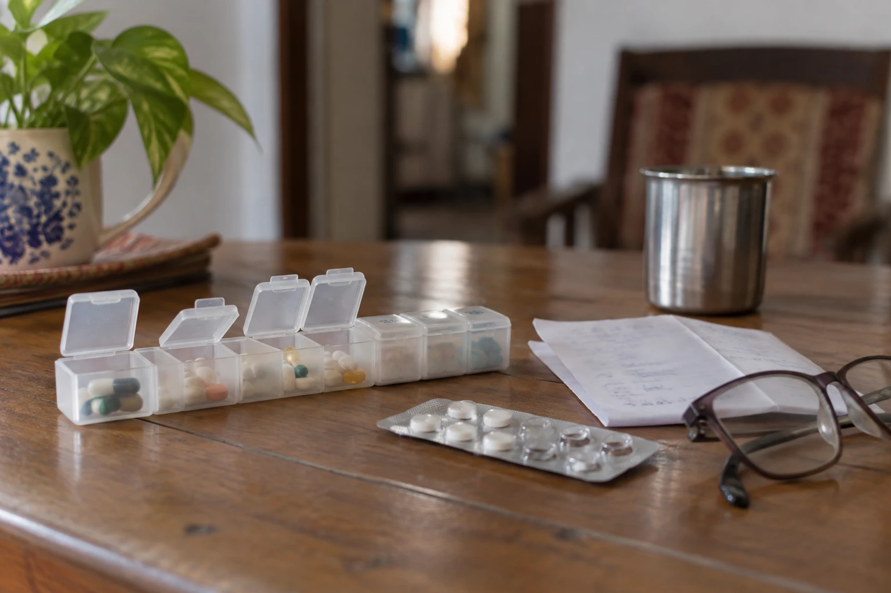
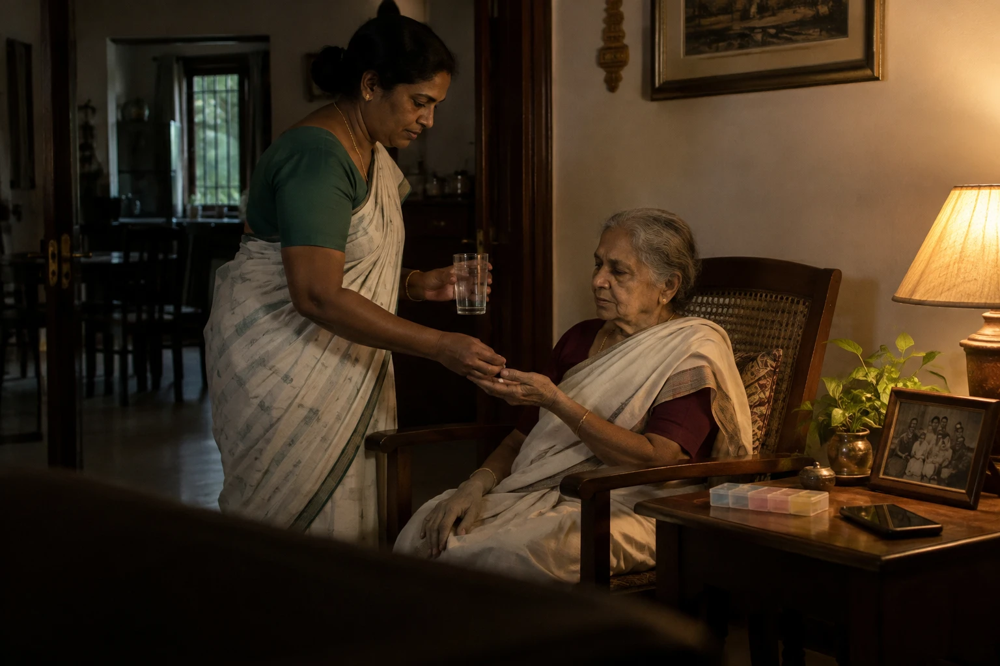

How I found the problem
I talked with family carers, people looking after a parent’s medicines from the same house or another city. I didn’t ask what app they wanted. I asked them to walk me through the last time a dose changed.
A new prescription arrived as a WhatsApp photo. Everyone assumed someone else had read it.
The person who actually gives the tablets heard about a change days later, or not at all.
Children in other cities called home to ask if Amma had taken it, and felt guilty when no one knew.
With two people helping, a dose was sometimes given twice, because nothing showed it was already given.
Published research with family carers says the same, in numbers and in their own words. That is the next section.
Is it worth solving?
A painful problem isn’t automatically a business. I looked at who loses what, who already spends money on care, and who would pay for this.
57.8% of family carers made a medication error in the past year. Among Indians with chronic illness, only about half take their medicines as prescribed.
WHO SAGE wave 2, secondary analysis of 2,840 patients
$12.0B → $18.8B
India’s home healthcare market from 2025 to 2030. 149 million Indians were 60 or older in 2022.
MarketsandMarkets, 2025
Families already pay for helpers, home nurses and medicine delivery. Keeping everyone on the same plan is the part nobody sells.
Free for a family with one helper. A paid plan when more people share care. The bigger buyer: home-care agencies, whose helpers log every dose a family can see.
1 Five families use it for two weeks with no dose given twice.
2 Those families are asked to pay for month two.
3 One home-care agency pilot: do families trust them more?
That is why the agency route matters. WhatsApp message costs also have to stay low for a free family plan.
My answer: worth solving, most likely paid for by care providers, with families using it free.
Personas
Built from my conversations with family carers and from published research. Each is a composite; the names are fictional.
Checks the family chat between meetings, orders refills, calls the doctor’s clinic.
Certainty, in one glance, that today’s doses happened.
Hearing about a mistake days later; being the only one who knows the plan.
Another app the rest of the family won’t open.
Let her change a dose once and know every carer has seen it.

Cooks, gives Amma her tablets at 8, 1 and 8, keeps a notebook.
One clear thing to do, at the right time.
Being blamed for a change nobody told her about.
English menus, small text, a new app on a shared phone.
Send each dose on WhatsApp, in Malayalam, with a photo of the tablet and one button.
Newspaper, temple, her serials; takes the tablets when Lakshmi brings them.
Stay independent, not be treated like a patient.
Three children asking her the same question.
Alarms, and being watched.
Work around her, without her ever touching the app.
Reads the family chat at night, Indian time.
Know Amma is fine without calling to check.
Guilt, and different answers from different people.
Alerts at 3 am about things he can’t act on.
Send a calm weekly note, and a nudge only when he is needed.
Whiteboard
I put every story on one board, asked “why” until the answer stopped being about one careless person, and only then looked for ideas. Ideas that broke what families told me were crossed out.
From what I heard to what I designed
Nothing in Carekin is there because it looked good. Each choice answers something a family told me.
I chose a one-button Home mode over the full app, because the person giving the tablets never downloads it.
Families coordinate in WhatsApp and won’t leave it.
The helper gets every dose on WhatsApp; only Priya uses the app.
The person giving pills never downloads an app.
Home mode: one dose, one big button, on a shared phone.
Mistakes happen right after the doctor changes a dose.
A change stays open until every carer has confirmed it.
Children far away feel guilt, not curiosity.
Today opens with one calm sentence, not a list.
The helper reads Malayalam and shares a phone.
Malayalam throughout, and layouts that hold at 200% text.
Two people sometimes gave the same dose.
“Already given at 8:04” stops a second dose.
Designing for the highs and lows
A normal Tuesday is easy. I designed for the busiest and the worst days too, because that is when a family decides whether to keep using it.
High, discharge dayHome from hospital with eight new medicines
Priya scans the discharge sheet once. Each change stays open until Lakshmi and Arun confirm; Lakshmi gets doses one at a time, not a list.
High, festival travelAmma spends Onam in Bengaluru
The plan moves with Amma: Priya gives the doses for those days and Lakshmi’s prompts pause.
Low, nothing changesMonths of the same routine
Carekin goes quiet: one calm weekly note, no daily noise.
Low, a refusalAmma won’t take the evening tablet
Logged as “Not given, Amma refused”, with one calm summary to Priya, not an alarm.
Worst, no signalLakshmi’s phone is offline
She logs the dose anyway; it syncs later, and a clash with a new dose is shown, never guessed.
Worst, two giversTwo people reach for the same dose
“Already given at 8:04, by Lakshmi” stops the second one.
How I made it
I designed Carekin alone, in two weeks. Every screen is mine; AI helped with the work around the design.
Conversations with family carers, published research with carers in Kerala, and a FigJam board where I sorted it all.
I used AI to group my notes into themes and check my copy, then checked every theme against what families told me.
Every screen, the design system, the prototype and the walkthrough are my own work.
The scenario illustrations are AI-generated in my style. The phone screens are the real prototype.
The story
Each chapter answers one question. Start at the top, or jump to the one you care about.
The problemWho finds out when Amma’s dose changes, and who doesn’t?
Read chapter02ListeningWhat do families actually do today, and where does it break?
Read chapter03The root causeWhy does a changed dose get lost between people who all care?
Read chapter04ChoicesWhat did I try, drop and decide, and what did each choice cost?
Read chapter05The systemHow does one schedule reach three people who never open the same app?
Read chapter06The designWhat does each person see, and how does it stay safe?
Read chapter07ProofHow would I know it works, and what would I do next?
Read chapterThe verdict
Where chapters one to four led. Each one links to the evidence behind it.
I chose a one-button Home mode over the full app, because the person giving the tablets never downloads it.
See the evidencePrescriptionsI chose to record only what the doctor wrote over AI dose suggestions, because a wrong guess about medicine can hurt someone.
See the evidenceOfflineI chose to keep every entry over letting the last edit win, because a dose logged offline has to survive a later change.
See the evidenceRemindersI chose one gentle nudge after 24 hours over alarms, because alarms at night get muted, and then nothing gets through.
See the evidenceSafetyI chose to block a second dose and show the first, because the worst mistake is the same tablet given twice.
See the evidenceHardwareI chose the phone they already have over a smart pillbox, because a pillbox can’t tell anyone the doctor changed a dose.
See the evidenceInsights
The organiser in Bengaluru plans everything, but the change happens in Thrissur.
The ecosystem
So Carekin works where they already talk, and the app is only for the person who plans.

From paper
Carekin records exactly what the doctor wrote. It never suggests or reads a dose for you.
My thinking
Struck through: what I dropped. In the pill: what I chose.
I chose the phone they already have over a smart pillbox, because a pillbox can’t tell anyone the doctor changed a dose.
Make Lakshmi install the full app
One-button Home modeShe sees one dose at a time, nothing more.
The person giving pills never has to learn an app.
An AI that reads the slip and suggests the dose
Record only what the doctor wroteMore typing for Priya when a slip reads badly.
Carekin never interprets a medicine.
Last write wins
History, never overwriteMore entries for Priya to look at.
A dose is never silently lost.
Alarms for the whole family
One gentle nudge after 24 hoursA slow confirmation can take a day.
Nobody is woken at 3 am; the old dose stays visible meanwhile.
Mark it red as “missed”
Recorded calmly, one summaryPriya hears later in the day.
Lakshmi isn’t blamed, and “ran out” becomes a refill reminder.
A smart pillbox
The phone they already haveNo sensor to prove a tablet was taken.
Costs nothing, and knows when the doctor changed a dose.

Safety
If a dose is already logged, Home mode blocks a second one.
Chapter 01 of 07
Who finds out when Amma’s dose changes, and who doesn’t?
The problem
Listening
The root cause
Choices
The system
The design
Proof
Chapter 02 of 07
What do families actually do today, and where does it break?
The problem
Listening
The root cause
Choices
The system
The design
Proof
Chapter 03 of 07
Why does a changed dose get lost between people who all care?
The problem
Listening
The root cause
Choices
The system
The design
Proof
Chapter 04 of 07
What did I try, drop and decide, and what did each choice cost?
The problem
Listening
The root cause
Choices
The system
The design
Proof
Chapter 05 of 07
How does one schedule reach three people who never open the same app?
The problem
Listening
The root cause
Choices
The system
The design
Proof
Chapter 06 of 07
What does each person see, and how does it stay safe?
The problem
Listening
The root cause
Choices
The system
The design
Proof
Chapter 07 of 07
How would I know it works, and what would I do next?
The problem
Listening
The root cause
Choices
The system
The design
Proof